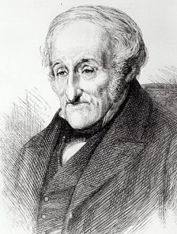
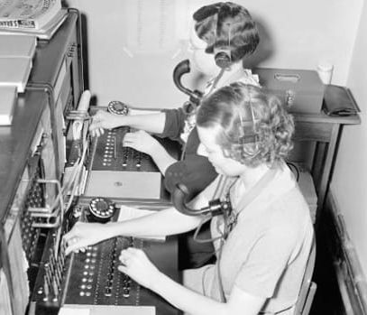
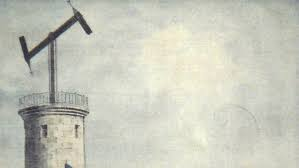
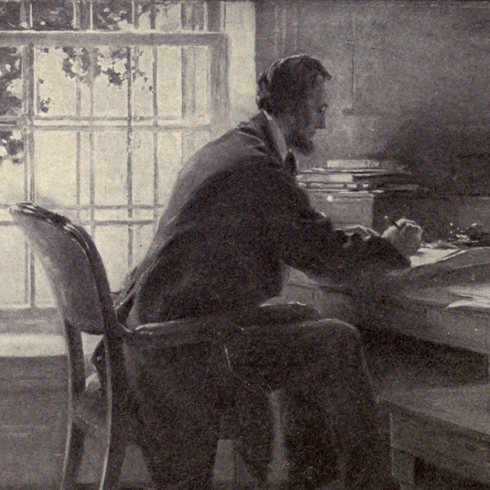

The Telegraph
Important People
-The first Telegraph, the optical Telegraph, was invented by Lovell Edgeworth in 1767.
-First experimental electric telegraph was tested in 1816 by Francis Ronalds
-Baron Schilling von Canstatt invented the Schilling Telegraph in 1832

Uses
-It has largely been used to coordinate business and communication between loved one when they are far apart
-Can also be used for quick international communication
-Especially in wars, messages sent can be used to send warning of attacks and could very likely save lives

Abridged History
-The first type of telegraph was the optical telegraph, invented in 1767.
-This was used widely in Western Europe for many years
-The first electric typewriter was invented in 1816, but didn't recieve wider use until much later around the 1850s

Importance
-The telegraph largely contributed to the success of the Union in the Civil War
-The telegraph facilitated the growth of the railroad system and industry
-In doing this, the telegraph also paved the way for Westward expansion

Hypothetical Map
Sources Used
History.com Editors. “Morse Code and the Telegraph.” HISTORY, 6 June 2019, www.history.com/topics/inventions/telegraph.
J.H. Colton & Co, Nathaniel Prentiss Banks, and G.W. & C.B. Colton & Co. Map Showing the Telegraph Lines in Operation, Under Contract, and Contemplated, to Complete the Circuit of the Globe. [New York: G.W. & C.B. Colton & Co, 1871] Map. Retrieved from the Library of Congress, www.loc.gov/item/86692708.
McGillem, Clare D.. "telegraph". Encyclopedia Britannica, Unknown Date, https://www.britannica.com/technology/telegraph. Accessed 27 March 2022.